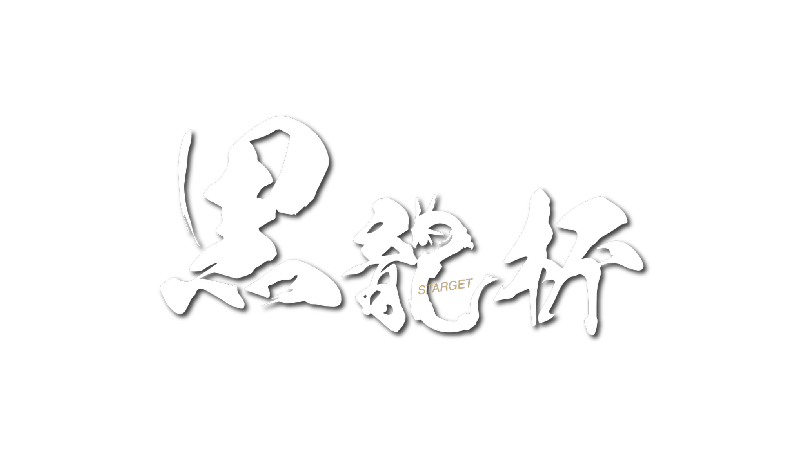

ENTRY TEAM
エアロハピナス
- さぶ
- まか
- ミュウ愛
- Tennen
- Shosharm

OFFICIAL SITE #2
STARGET / 元春 250 SUBSCRIBERS ANNIVERSARY
チャンネル登録者
250人記念大会
STARGET／元春が主催する『ポケモンユナイト』コミュニティ大会、第2回「黒龍杯」。6チームがA・Bブロックに分かれて総当たり戦を行い、各ブロック1位が決勝へ進出します。
OPENING CEREMONY
ハンムラビ法典（恨みマシマシ）VSエアロハピナス
Neo Zenith GamingVSHulpa
ハンムラビ法典（恨みマシマシ）VS癇癪サイコゲイザー
Neo Zenith GamingVSヤミラミマクロ
エアロハピナスVS癇癪サイコゲイザー
HulpaVSヤミラミマクロ
A BLOCK 1STVSB BLOCK 1ST BO3
CLOSING CEREMONY
※進行状況により開始時刻は前後します。決勝戦はオールスターモードで行います。
開始〜1:00未満は即時中断し、確認後に続行または再試合。1:00以上〜5:00未満は原則続行。ただし大型オブジェクト未取得、合計ゴール差100点以内、決定的影響を否定できない場合は主催判断で再試合。5:00以降は続行します。
再試合時は構成固定。異常はコメント等で主催へ連絡してください。
発覚した時点で、主催判断によりチームを失格とします。
信頼関係の上で成り立つ大会であることをご理解ください。
回線落ちは原則再試合ですが、再発、試合中盤以降、進行状況などにより続行する場合があります。著しく結果に影響すると判断した場合は再試合とすることがあります。最終判断はすべて主催が行います。
優勝チームには景品を贈呈。参加者全員に、次回「500人記念大会」の参加優先権があります。
LIVE STREAM
第1回大会 配信アーカイブ